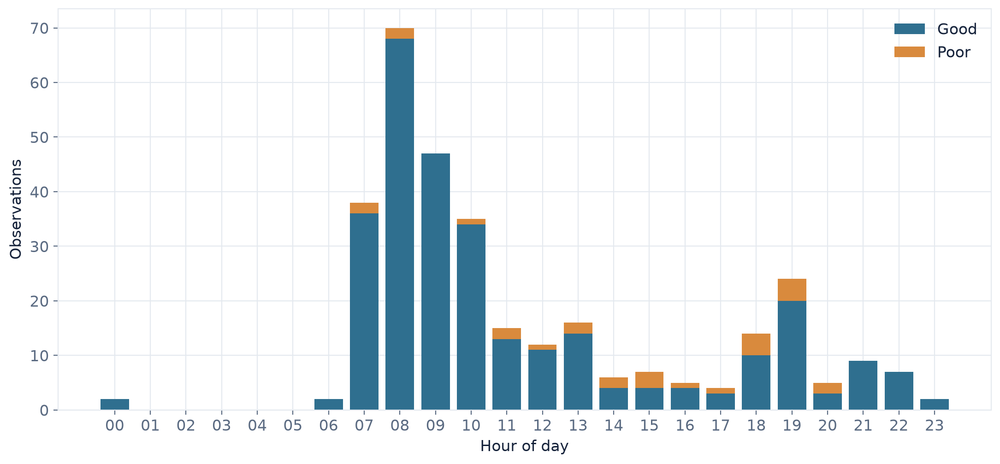
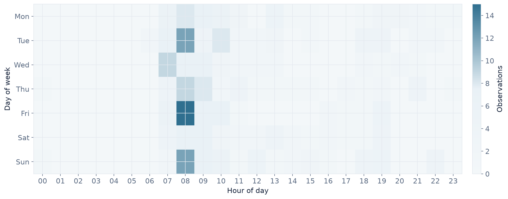
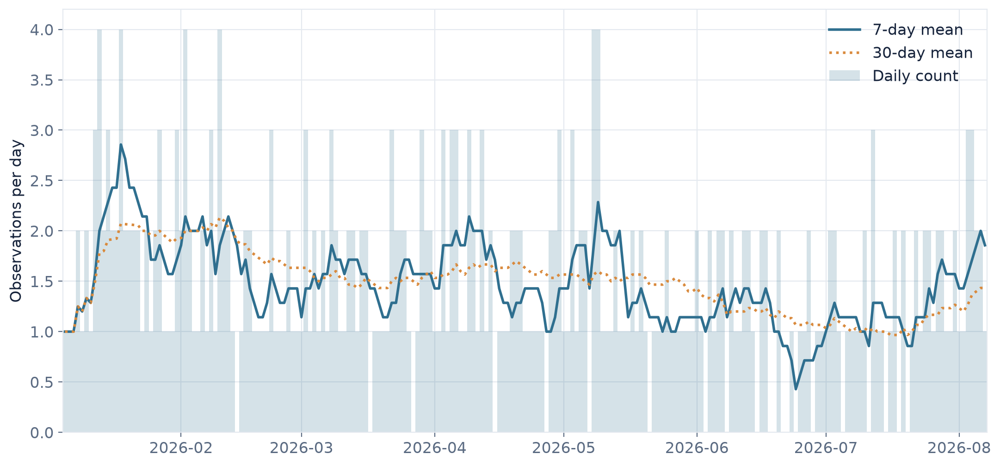
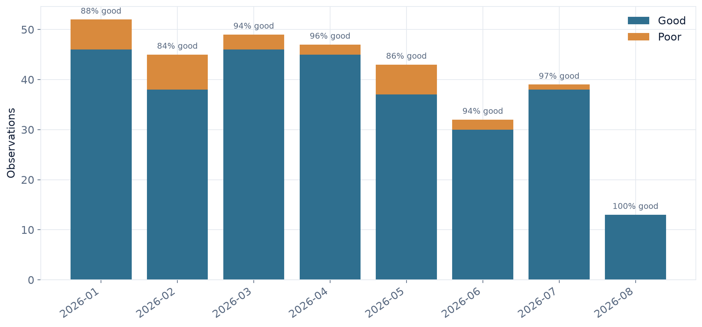

Observations
320
Days covered
215
2026-01-05 → 2026-08-07Per day
1.49
median 1.0Good
91.6%
293 observationsPoor
8.4%
27 observationsTiming concentration
0.50
mean time 10:27Typical gap
13.7 h
IQR 5.8–23.2 hBusiest weekday
Sunday
frequency 0.497The daily rhythm
The signature reading: when during the 24-hour cycle do observations occur?
Signature 24-hour dial

00:00 is at the top and time runs clockwise. Bar length represents the number of observations; amber marks poor observations.
Observations by hour

The linear view makes peaks and troughs easier to compare than the polar dial.
Weekday × hour activity

Each cell is the number of observations for that weekday and hour.
Timing & intervals
How closely spaced are consecutive observations?
Time between observations

Long gaps above the 99th percentile are omitted from the display so the main distribution remains visible. The exponential curve is a null-model reference.
Stability over time
Does the overall frequency remain stable, or does it drift?
Daily observations and rolling means

Faint bars show individual days; solid = 7-day mean; dotted = 30-day mean.
Observation calendar

Each cell is one calendar day. Darker cells contain more observations; pale cells contain none.
Top 3 longest observation streaks

A streak is a consecutive run of calendar days containing at least one observation.
Cumulative observations

The cumulative curve provides a simple long-term view of how observations accumulate.
Quality
Are poor observations isolated events or do they cluster in time?
Good and poor observations over time

Good observations are shown faintly; poor observations are highlighted. This shows when poor events actually occurred without creating unstable daily percentages.
Monthly quality

Bars show the actual number of observations. Labels give the percentage classified as good.
When do poor observations occur?

The pale blue distribution is all observations; amber shows the poor subset.
Overall quality

Good = Value 1. Poor = Value 0. The values are taken directly from the raw log.
Null-model diagnostics
Would a simple Poisson process reproduce the observed daily counts?
Daily counts vs Poisson

Bars are observed days; the line is the expected distribution from a Poisson model with the observed mean.
Methods & interpretation
Timing concentration
R = 0.502. This is the mean resultant length of the clock times. R = 0 means observations are spread evenly around the 24-hour cycle; R = 1 means they are concentrated at a single time. The circular mean time is 10:27. The Rayleigh test gives p < 0.001 for the null hypothesis of uniform timing.
Weekday frequency
Weekday counts are compared against the number of Mondays, Tuesdays, etc. actually present in the observation window, rather than assuming exactly one seventh of observations should fall on each day. Result: p = 0.497.
Quality and weekday
A contingency test asks whether the good/poor composition depends on weekday. Result: p = 0.541. Some expected cells are sparse, so this result should be treated cautiously.
Quality and time of day
A two-sample Kolmogorov–Smirnov test compares the clock-time distributions of good and poor observations. Result: p < 0.001. Because clock time is circular, this is presented as a supplementary diagnostic rather than a definitive circular test.
Daily counts
The observed daily count distribution is compared with a Poisson model whose rate is estimated from the observed mean (λ = 1.49). The variance-to-mean dispersion ratio is 0.54. Values around 1 are broadly consistent with Poisson dispersion; substantially larger values indicate overdispersion.
Intervals
The interval plot compares observed gaps with an exponential null model based on the observed mean gap (16.1 h). The model is used as a reference distribution, not as an assumption that the underlying behaviour is memoryless.
Quality definition
Good = Value 1. Poor = Value 0. The dashboard uses the raw values directly; no quality values are inferred or imputed.